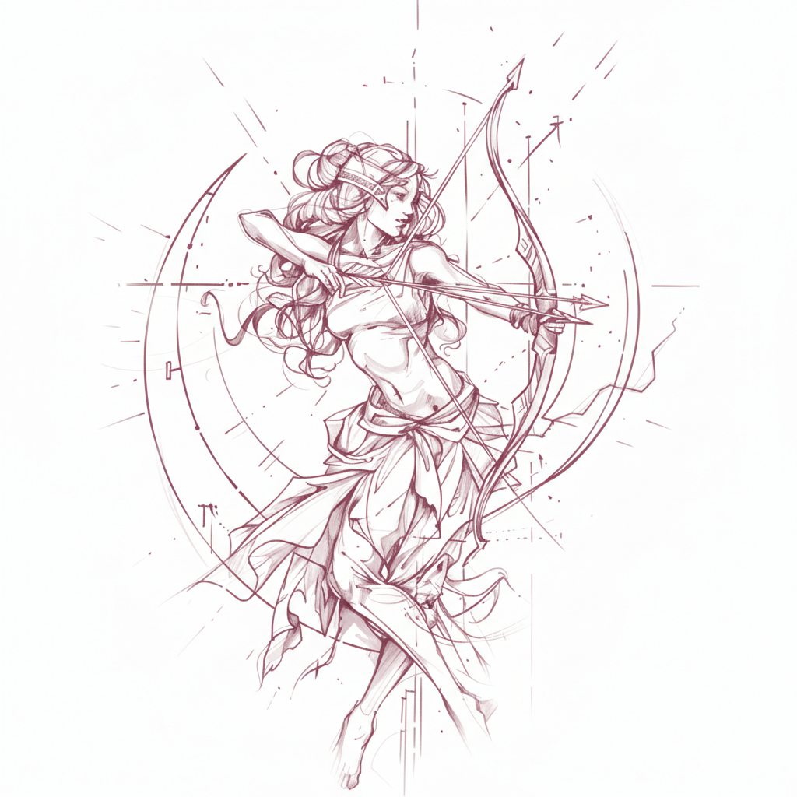

A Artemis Glow nasceu com a missão de unir tecnologia de ponta e estilo feminino, trazendo produtos que vão além da funcionalidade e refletem a personalidade de cada cliente. Nossa loja é dedicada a quem ama gadgets, eletrônicos e acessórios que brilham! Aqui, cada item é pensado para ser bonito, útil e cheio de charme, criando setups e espaços que inspiram criatividade e alegria.
Acreditamos que tecnologia também pode ser estética, e que cada escolha pode expressar quem você é. Por isso, nossas cores suaves, designs delicados e atenção aos detalhes fazem parte de toda a experiência Artemis Glow.
Além de oferecer produtos de qualidade, nosso compromisso é com um atendimento próximo e acolhedor, garantindo que você se sinta segura e bem recebida a cada compra. Aqui, você não encontra apenas eletrônicos, encontra uma forma de se conectar com sua própria criatividade e estilo, enquanto transforma seu dia a dia em algo mais prático, divertido e elegante.
⋆˙⟡ Seja bem-vinda à Artemis Glow, onde a tecnologia brilha junto com você!